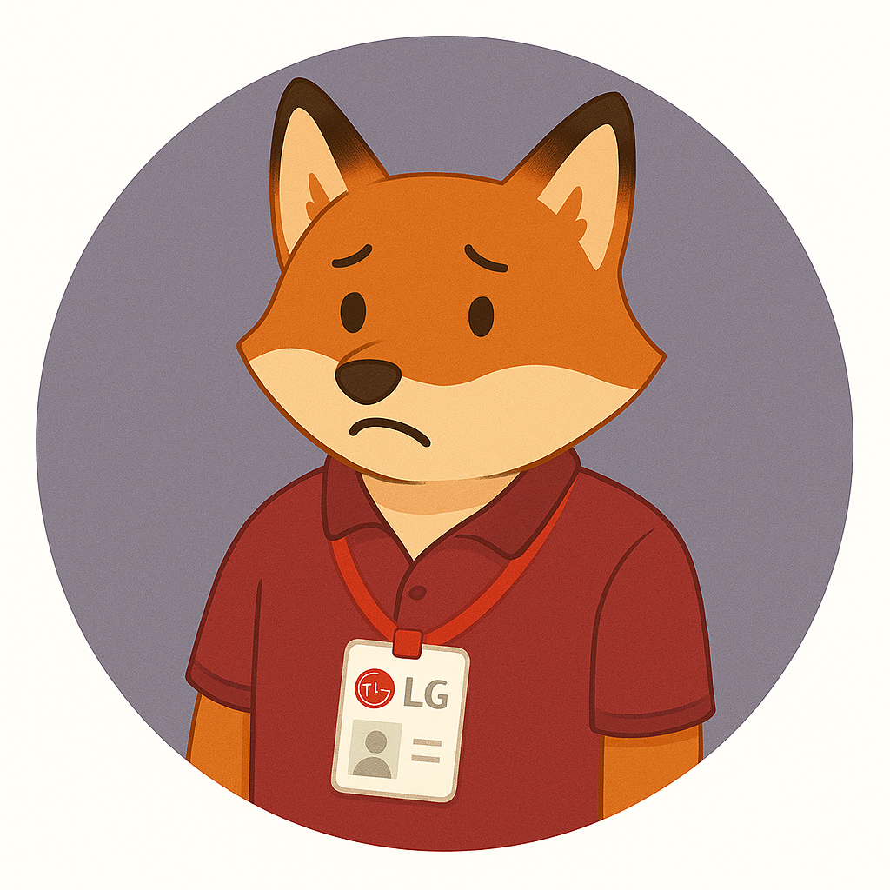
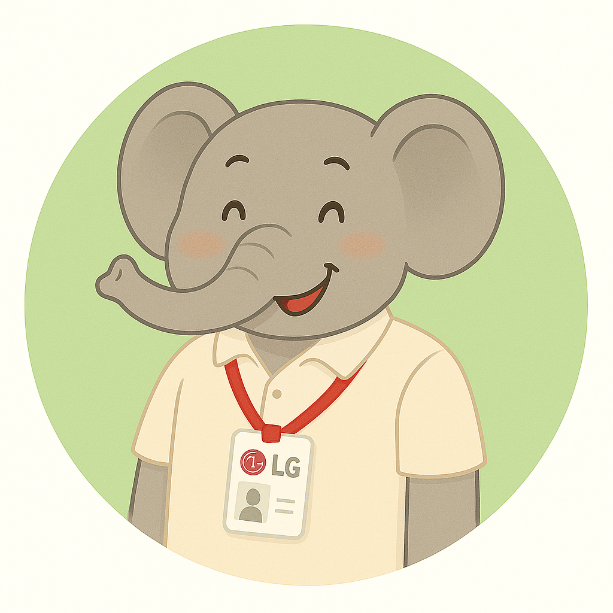
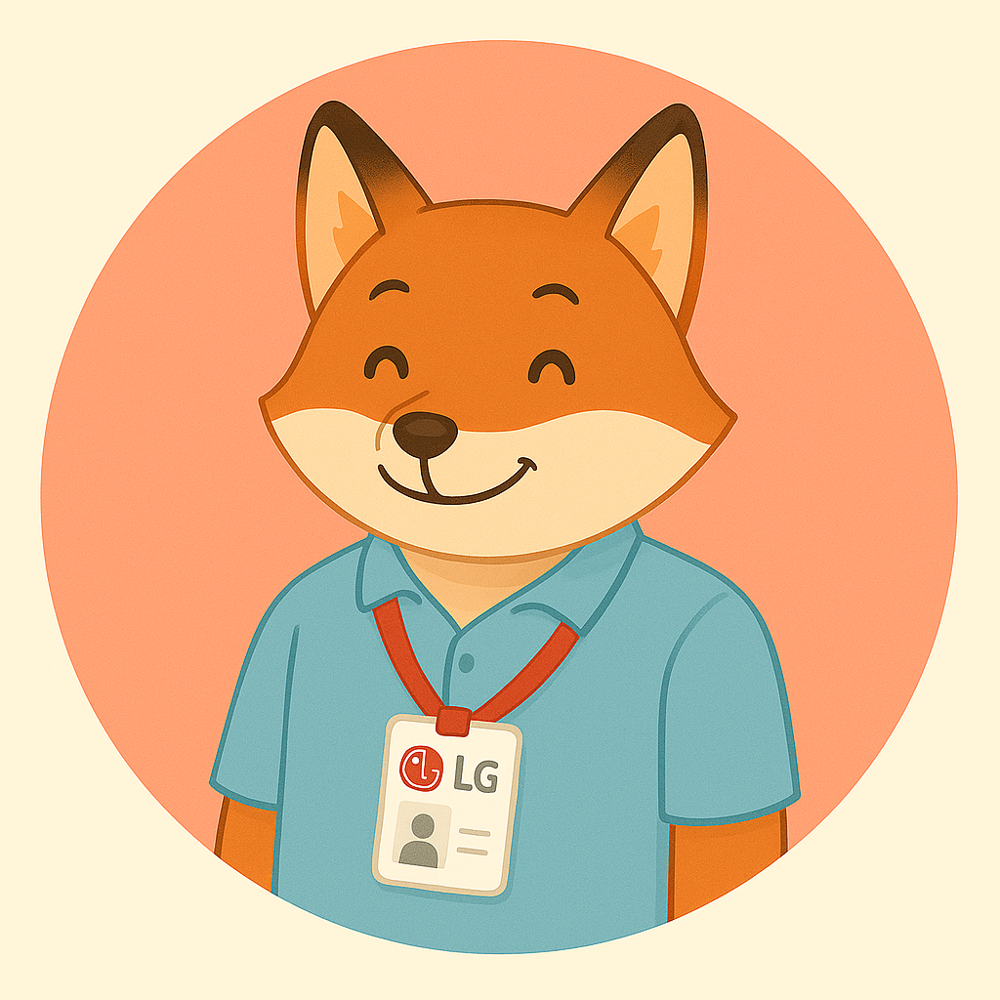
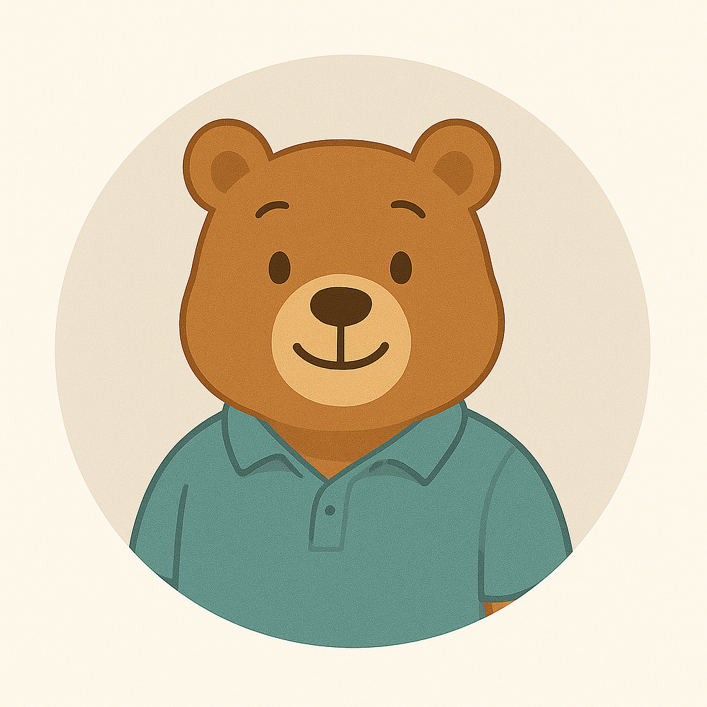
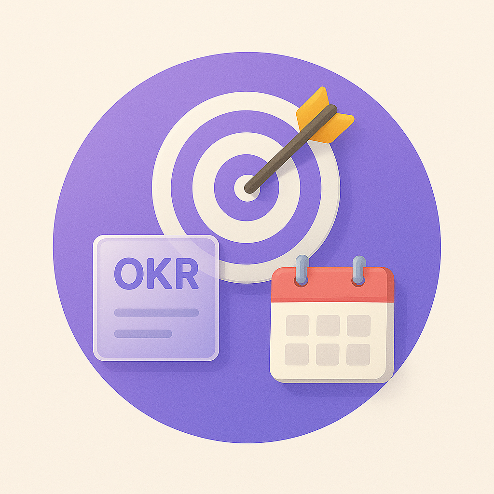
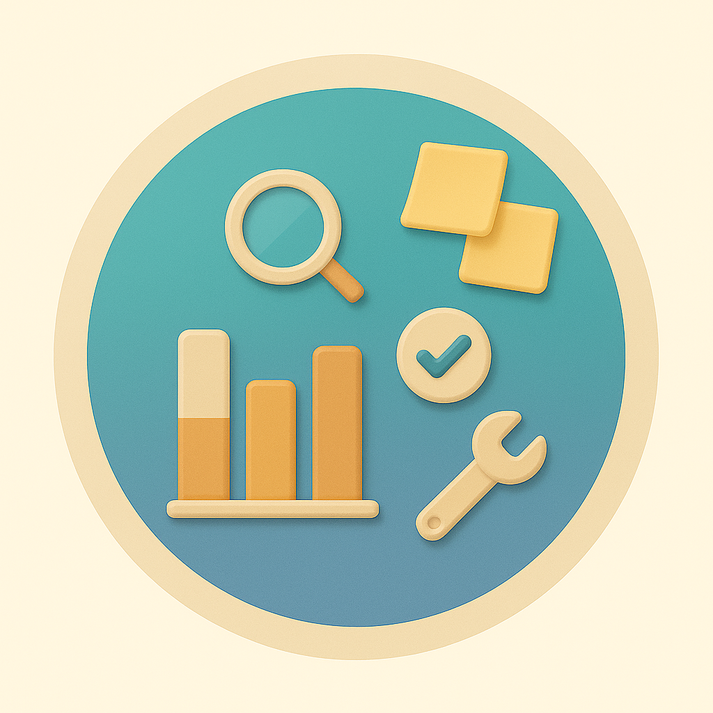
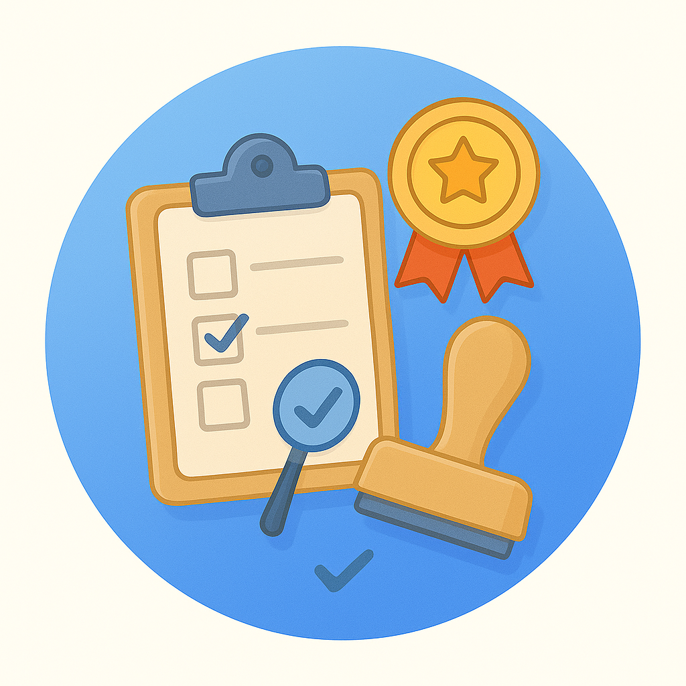
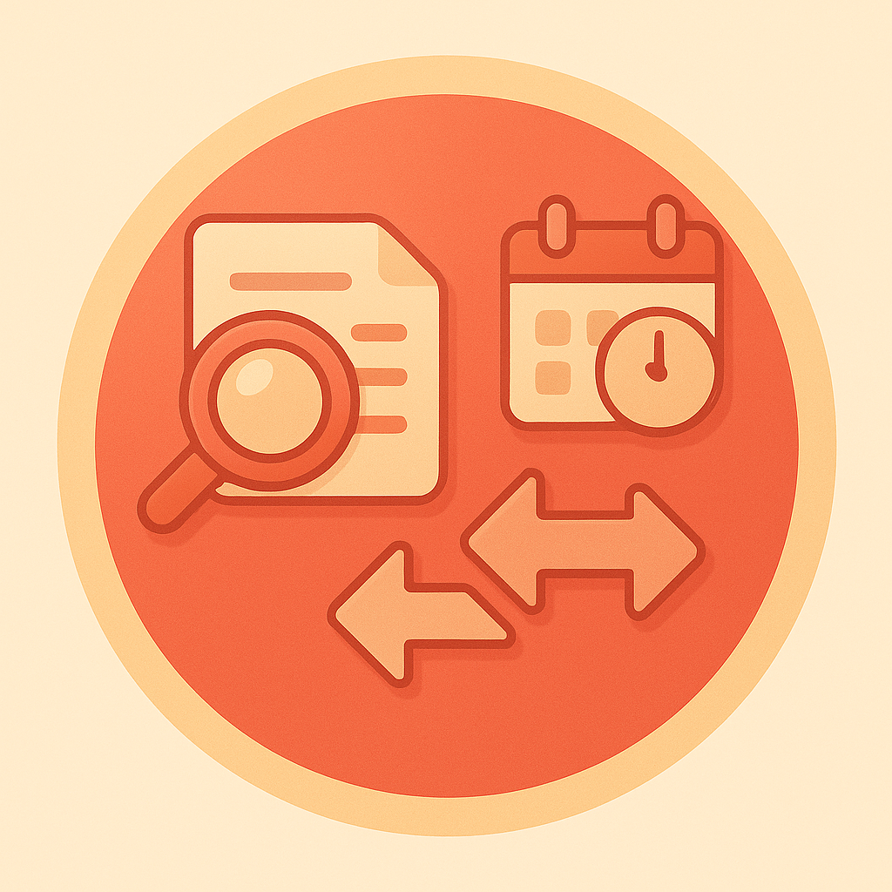

저성과자
자신감이 낮고 방어적인 태도의 구성원

중간성과자
강점·개선점을 균형 있게 인식하는 구성원

고성과자
임팩트를 강조하고 지원을 명확히 요청하는 구성원

성격고르기
맞춤 성격 설정
직군/직무/장단점 등 세부 특성을 직접 설정
맞춤 성격 설정

목표설정
연초 목표 수립 면담을 연습합니다.

중간피드백
연중 성과 점검 및 코칭 대화를 연습합니다.

최종평가
평가 전 기대 수준 정렬 면담을 연습합니다.

이의제기
평가 이의제기 상황의 면담을 연습합니다.